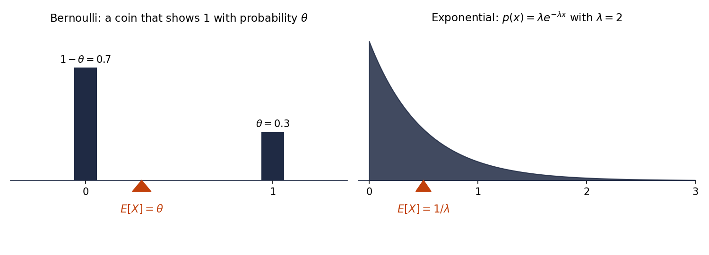
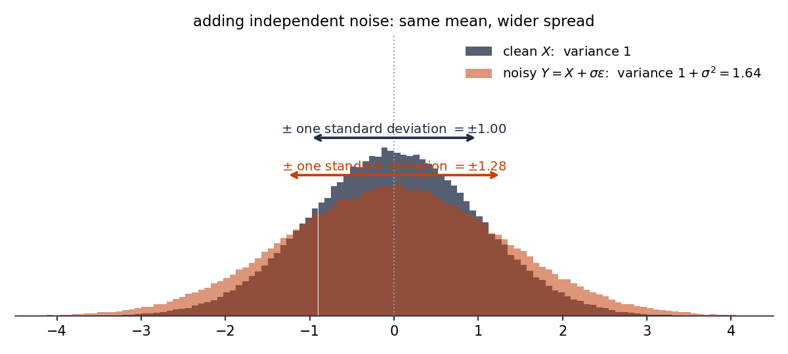
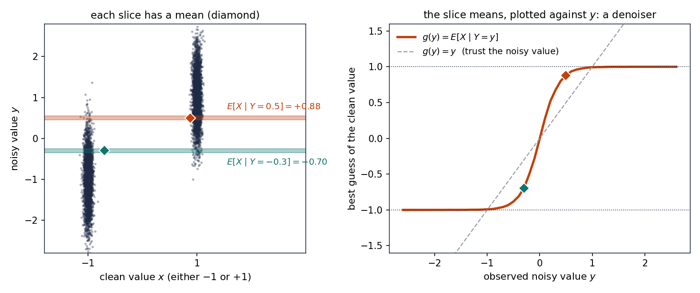

3. Expectation, variance, covariance¶
Part I: Probability foundations. Needed throughout.
Prerequisites: note 1 and note 2.
Intuition¶
A distribution is a lot of information. Often we want to boil it down to a couple of numbers: where is it centred, and how spread out is it. The expectation answers the first question, the variance the second.
These two numbers do far more work in this series than their simplicity suggests. Every training loss we will write down is an expectation. The forward process of a diffusion model is designed by tracking one variance. And the thing a denoising network learns is a conditional expectation, the centre of the slice from note 2. This note defines all three, computes them on small examples, and ends by showing why the conditional expectation is the best possible guess of a clean value from a noisy one.
Math¶
Expectation¶
The expectation of a random variable is the average of its values, where each value is weighted by how likely it is. If you drew from the distribution many times and averaged the results, this is the number the average would settle to.
Definition 3.1 (Expectation)
It is also called the mean of \(X\), often written \(\mu\).
Example (number of heads). From note 1: \(p(0) = \tfrac14,\; p(1) = \tfrac12,\; p(2) = \tfrac14\). So \(\E[X] = 0 \cdot \tfrac14 + 1 \cdot \tfrac12 + 2 \cdot \tfrac14 = 1\). On average, one head in two tosses.
Example (Bernoulli). A coin that shows \(1\) with probability \(\theta\) and \(0\) otherwise, so \(p(1) = \theta\) and \(p(0) = 1 - \theta\). Then
Notice that the expectation, \(\theta = 0.3\) say, is not a value the coin can ever show. The expectation is the centre of the distribution, not a typical outcome.
Example (exponential). A waiting time with density \(p(x) = \lambda e^{-\lambda x}\) for \(x \ge 0\). Now the sum becomes an integral, and one integration by parts gives
A larger rate \(\lambda\) means shorter waits on average.
The integration by parts
Take \(u = x\) and \(\d v = \lambda e^{-\lambda x} \d x\), so \(\d u = \d x\) and \(v = -e^{-\lambda x}\). Then
A good picture: draw the distribution as a block of material sitting on a beam. The expectation is the point where the beam balances.

Expectation of a function. Often we want the average not of \(X\) but of something computed from it, like \(X^2\). Note 1 already gave the rule: weight the values of the function by the probabilities of \(X\),
Variance¶
The mean says where the distribution is centred. The variance says how far from that centre the values tend to fall. Measure the distance from the mean, square it so that left and right both count as positive, and average.
Definition 3.2 (Variance and standard deviation)
The standard deviation is \(\sqrt{\mathrm{Var}(X)}\). It has the same units as \(X\), so it is the one to picture as a "typical distance from the mean".
In practice one almost always computes the variance with a shortcut. Expand the square and use \(\E[X] = \mu\):
So variance = mean of the square, minus square of the mean.
Example (Bernoulli). Since \(X\) is \(0\) or \(1\), \(X^2 = X\), so \(\E[X^2] = \theta\). Therefore
This is largest at \(\theta = \tfrac12\), the most unpredictable coin, and zero at \(\theta = 0\) or \(1\), where there is nothing random left.
Example (exponential). Integrating by parts twice gives \(\E[X^2] = 2/\lambda^2\), so
and the standard deviation is \(1/\lambda\), the same as the mean.
Shifting, scaling and adding¶
Four rules cover almost every computation of a mean or variance in this series.
Proposition 3.3 (Rules for mean and variance)
For any numbers \(a, b\) and any random variables \(X, Y\):
- \(\E[aX + b] = a\, \E[X] + b\)
- \(\mathrm{Var}(aX + b) = a^2\, \mathrm{Var}(X)\)
- \(\E[X + Y] = \E[X] + \E[Y]\), always
- \(\mathrm{Var}(X + Y) = \mathrm{Var}(X) + \mathrm{Var}(Y)\), if \(X\) and \(Y\) are independent
In words. Shifting by \(b\) moves the centre and does nothing to the spread. Scaling by \(a\) scales the centre by \(a\) and the spread, measured as a squared distance, by \(a^2\). Means always add. Variances add when the two variables have nothing to do with each other. The short proofs are in the derivation section.
Example (the noisy copy). This example comes back throughout the series. Take a clean value \(X\) and add independent noise: \(Y = X + \sigma\varepsilon\), where \(\varepsilon\) has mean \(0\) and variance \(1\). By rule 3 and rule 1, \(\E[Y] = \E[X] + \sigma \cdot 0 = \E[X]\): noise does not move the centre. By rule 4 and rule 2,
The noise variance simply adds on. With \(\mathrm{Var}(X) = 1\) and \(\sigma = 0.8\) that is \(1.64\), which is how much wider the orange marginal was in the figure of note 2.

Example (keeping the variance fixed). If we keep adding noise, the variance keeps growing, which is inconvenient. The fix is to shrink the clean value a little before adding noise: \(Y = aX + \sigma\varepsilon\). Then
If \(\mathrm{Var}(X) = 1\) and we choose \(a^2 + \sigma^2 = 1\), then \(\mathrm{Var}(Y) = 1\) as well. The signal fades, the noise grows, and the overall scale stays put. That one line is the design principle behind the forward process of DDPM, which we meet in note 19.
What if they are not independent? Then rule 4 picks up a correction term. The covariance of \(X\) and \(Y\) is
positive when the two tend to be above their means together, negative when one tends to be up while the other is down, and zero when they are independent. The general rule is \(\mathrm{Var}(X + Y) = \mathrm{Var}(X) + \mathrm{Var}(Y) + 2\, \mathrm{Cov}(X, Y)\). We will need covariance properly in note 4, where it becomes the matrix that describes the shape of a multivariate Gaussian.
Conditional expectation¶
In note 2, observing \(Y = y\) replaced the distribution of \(X\) by the conditional distribution \(p(x \mid y)\), the rescaled slice. The conditional expectation is simply the mean of that slice.
Definition 3.4 (Conditional expectation)
Example (the noisy bit). From note 2, with a fair bit and a wire that flips with probability \(0.2\): \(p(X = 1 \mid Y = 1) = 0.8\). So \(\E[X \mid Y = 1] = 0 \cdot 0.2 + 1 \cdot 0.8 = 0.8\), and likewise \(\E[X \mid Y = 0] = 0.2\).
The important thing to notice is that the answer depends on \(y\). For each observed value there is a different slice, and each slice has its own mean. So \(\E[X \mid Y = y]\) is really a function of \(y\). Call it \(g(y)\). It takes in what we observed and returns our best guess of what we did not observe.
Example (two clean values). Let the clean value be \(-1\) or \(+1\) with equal probability, and let the noisy copy be \(Y = X + 0.6\, \varepsilon\). On the left below, each horizontal band is a slice, and the diamond marks the mean of the \(x\)-values inside it. On the right, those means are plotted against \(y\).

Look at the shape of \(g\). For a clearly positive observation like \(y = 1.5\), the guess is essentially \(+1\): the clean value was almost certainly \(+1\), and the extra \(0.5\) is noise to be thrown away. Near \(y = 0\) the observation is ambiguous and the guess slides smoothly between the two possibilities. The curve is not the diagonal: \(g\) does not simply hand back \(y\). It uses what it knows about the clean values to clean up the observation. This curve is a denoiser, and it is, in one dimension, exactly what the network in a diffusion model is trained to compute.
Two facts about conditional expectation are used constantly.
Proposition 3.5 (Tower rule)
Averaging the conditional means over all the values \(Y\) can take gives back the plain mean:
Here \(\E[X \mid Y]\) means \(g(Y)\): the function \(g\) applied to the random observation. Check with the noisy bit: \(Y\) is \(0\) or \(1\) with probability \(\tfrac12\) each, so \(\E[g(Y)] = \tfrac12 \cdot 0.2 + \tfrac12 \cdot 0.8 = 0.5 = \E[X]\).
Proposition 3.6 (The conditional mean is the best guess)
Among all functions \(h\) of the observation, the one that makes the average squared error \(\E\big[(X - h(Y))^2\big]\) smallest is \(h(y) = \E[X \mid Y = y]\).
This second fact is the reason conditional expectations matter so much to us. It says: if you train any flexible function, a neural network for instance, to predict \(X\) from \(Y\) by minimising squared error, the thing it converges to is the conditional mean. You never have to compute a slice or a conditional distribution. You just minimise squared error on pairs \((x, y)\), and the conditional mean is what comes out. That is how a diffusion model learns to denoise. The proof is short and is in the derivation section.
Derivation¶
1. The rules for mean and variance¶
Rule 1. Using the expectation of a function with \(f(x) = ax + b\):
because a density integrates to one. (Replace integrals by sums in the discrete case.)
Rule 2. The mean of \(aX + b\) is \(a\mu + b\), so the distance from the mean is \((aX + b) - (a\mu + b) = a(X - \mu)\). The shift \(b\) has cancelled. Squaring and averaging, \(\mathrm{Var}(aX + b) = \E[a^2 (X - \mu)^2] = a^2\, \mathrm{Var}(X)\).
Rule 3. Write the expectation against the joint distribution and split the sum:
where the inner sums are the marginals from note 2. Nothing about independence was used.
Rule 4. Let \(\mu_X, \mu_Y\) be the two means. Then
The last term is twice the covariance. If \(X\) and \(Y\) are independent, the joint factorises, \(p(x, y) = p(x)\, p(y)\), so the expectation of the product is the product of the expectations, \(\E[X - \mu_X] \cdot \E[Y - \mu_Y] = 0 \cdot 0\), and the term vanishes. \(\square\)
2. The mean is the best constant guess¶
Warm-up for Proposition 3.6. Suppose you must guess \(X\) with a single number \(c\), before observing anything, and you are penalised by the squared error. Which \(c\) is best? Write \(X - c = (X - \mu) + (\mu - c)\) and expand:
The first term does not depend on \(c\). The second is smallest, namely zero, when \(c = \mu\). So the best constant guess is the mean, and the error you are left with is the variance.
3. The conditional mean is the best guess from an observation¶
Now you are allowed to look at \(Y\) before guessing, so your guess is a function \(h(Y)\). Think slice by slice. Once \(Y = y\) is observed, \(h(y)\) is just a number, and within that slice \(X\) follows \(p(x \mid y)\). By the warm-up, applied to the slice, the best number is the mean of the slice, \(\E[X \mid Y = y]\), and no other choice does better in that slice. The overall error is the average of the per-slice errors over \(y\) (that is the tower rule), so choosing the best number in every slice gives the best function overall:
The same calculation shows what error remains: the average, over \(y\), of the variance within each slice. Even the best denoiser cannot remove that; it is the uncertainty that the observation genuinely leaves open.
Code¶
Expectations are rarely computed by integration in practice. They are estimated by averaging samples, which is exactly what a training loop does with a loss. The script below checks four things from this note by sampling: the mean and variance of an exponential, the variance of a noisy copy, the conditional mean by slicing for the two-value example, and the tower rule.
"""Note 3: expectations as sample averages, variance of a noisy copy, conditional mean by slicing."""
import numpy as np
rng = np.random.default_rng(0)
n = 400_000
# 1. An expectation is what a sample average settles to.
x = rng.exponential(scale=1 / 2.0, size=n) # Exponential with rate lambda = 2
print(f"exponential, rate 2: sample mean = {x.mean():.4f} (exact 1/2) sample var = {x.var():.4f} (exact 1/4)")
# 2. Noisy copy Y = X + sigma * eps: the mean is unchanged, the variances add.
sigma = 0.8
clean = rng.standard_normal(n)
noisy = clean + sigma * rng.standard_normal(n)
print(f"noisy copy: mean = {noisy.mean():+.4f} (exact 0) var = {noisy.var():.4f} (exact 1 + sigma^2 = {1 + sigma**2:.2f})")
# 3. Conditional mean by slicing: clean value is -1 or +1, noisy copy adds Gaussian noise.
clean = rng.choice([-1.0, 1.0], size=n)
noisy = clean + 0.6 * rng.standard_normal(n)
for y0 in [-1.0, -0.2, 0.0, 0.2, 1.0]:
in_slice = np.abs(noisy - y0) < 0.05
print(f"E[X | Y ~ {y0:+.1f}] = {clean[in_slice].mean():+.3f}")
# 4. Tower rule: averaging the conditional means over Y gives back E[X].
bins = np.round(noisy, 1)
cond_mean = {b: clean[bins == b].mean() for b in np.unique(bins)}
print(f"E[ E[X|Y] ] = {np.mean([cond_mean[b] for b in bins]):+.4f} E[X] = {clean.mean():+.4f}")
exponential, rate 2: sample mean = 0.5001 (exact 1/2) sample var = 0.2522 (exact 1/4)
noisy copy: mean = +0.0019 (exact 0) var = 1.6386 (exact 1 + sigma^2 = 1.64)
E[X | Y ~ -1.0] = -0.991
E[X | Y ~ -0.2] = -0.513
E[X | Y ~ +0.0] = +0.008
E[X | Y ~ +0.2] = +0.503
E[X | Y ~ +1.0] = +0.993
E[ E[X|Y] ] = +0.0012 E[X] = +0.0012
Connection forward¶
- Note 4 extends mean and variance to vectors: the mean becomes a vector, the variance becomes the covariance matrix, and together they describe a multivariate Gaussian completely.
- Notes 7 and 8 define entropy and KL divergence as expectations of \(\log p\). Every information quantity in this series is an expectation.
- Note 11 writes maximum likelihood as maximising an expectation over the data, estimated by a sample average, as in the code above.
- Note 19 designs the forward process with the rule \(\mathrm{Var}(aX + \sigma\varepsilon) = a^2 \mathrm{Var}(X) + \sigma^2\), choosing \(a^2 + \sigma^2 = 1\) at every step.
- Note 23 trains a network by squared error to predict the clean image (or the noise) from the noisy image. By Proposition 3.6, what it learns is a conditional expectation.
- Note 26 shows that this conditional expectation and the score of the noisy distribution are the same information in two forms.